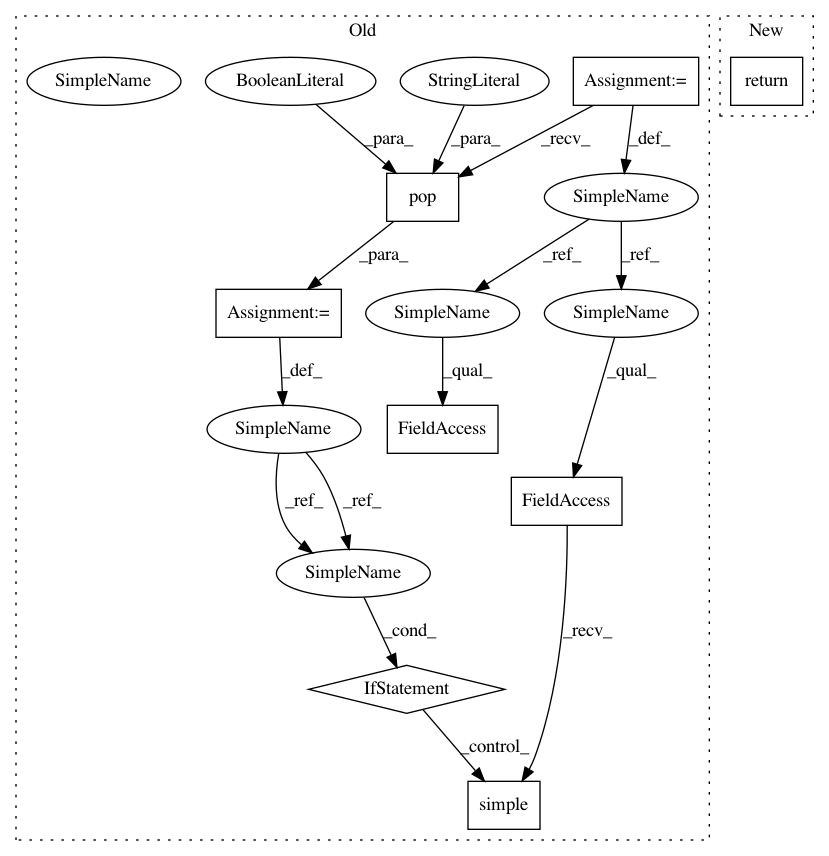

80a0435e2cc93f37ab94ebd23c73d9d023e7b6c6,nilmtk/elecmeter.py,ElecMeter,_compute_stat,#ElecMeter#Any#Any#,466
Before Change
if `full_results` is True then return nilmtk.Results subclass
instance otherwise return nilmtk.Results.simple().
full_results = loader_kwargs.pop("full_results", False)
node = self.get_source_node(**loader_kwargs)
for n in nodes:
node = n(node)
node.run()
return node.results if full_results else node.results.simple()
def key_for_cached_stat(self, stat_name):
return ("building{:d}/elec/cache/meter{:d}/{:s}"
.format(self.building(), self.instance(), stat_name))
After Change
for node in nodes:
results = node(results)
results.run()
return results
def key_for_cached_stat(self, stat_name):
return ("building{:d}/elec/cache/meter{:d}/{:s}"
.format(self.building(), self.instance(), stat_name))
In pattern: SUPERPATTERN
Frequency: 3
Non-data size: 8
Instances
Project Name: nilmtk/nilmtk
Commit Name: 80a0435e2cc93f37ab94ebd23c73d9d023e7b6c6
Time: 2014-11-25
Author: jack-list@xlk.org.uk
File Name: nilmtk/elecmeter.py
Class Name: ElecMeter
Method Name: _compute_stat
Project Name: nilmtk/nilmtk
Commit Name: 727196fda06a4c79354ad7f181c279ef78022e55
Time: 2014-11-25
Author: jack-list@xlk.org.uk
File Name: nilmtk/elecmeter.py
Class Name: ElecMeter
Method Name: dropout_rate
Project Name: nilmtk/nilmtk
Commit Name: a583300c421eb31041883e2775280810f1e853ba
Time: 2014-11-25
Author: jack-list@xlk.org.uk
File Name: nilmtk/elecmeter.py
Class Name: ElecMeter
Method Name: good_sections